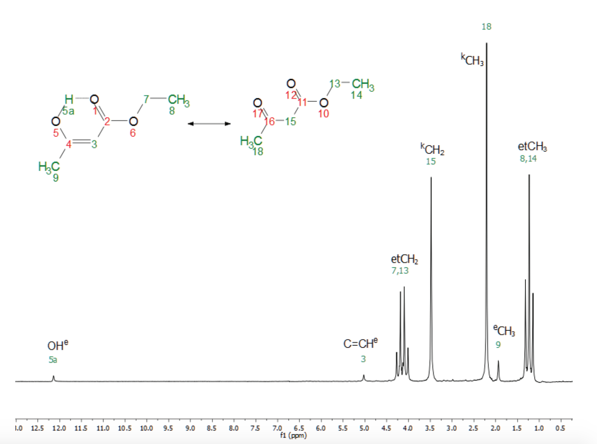
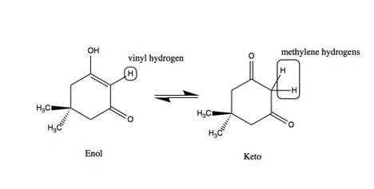

Note: This is Post-lab Assignment
Note: Carbonyl Chemistry Lab has two parts: Aldol Reaction and Keto-Enol Equilibrium Study
Problem Set
Part 1:
Thermo Fisher Scientific published a paper showcasing the use of NMR in measuring chemical equilibrium. Figure 2 shows the 1H NMR spectrum of ethyl acetoacetate measured from a neat sample at 82 MHz and 32 °C.
The peaks have already been identified to their respective H atoms in either the keto or enol form of the molecule. The integration values for selected peaks are given in Table 1. Use those measurements to calculate two values for Keq. How do these values compare to each other?

Figure 1. 1H NMR spectrum of ethyl acetoacetate
Table 1. Integration values for selected 1H NMR peaks for ethyl acetoacetate
|
Peak |
Integration |
|
3 |
0.70 |
|
15 |
14.9 |
|
9 |
2.1 |
|
18 |
21.9 |
Imagine you start with 1 mol of the keto-form of ethyl acetoacetate. How many moles of the keto and enol will there be at equilibrium at 32 °C? What if 0.03 moles of Br2 (aq) are added and reacted with the enol form to completion (as in the video)? How many moles of the enol and keto form will there be at the new equilibrium?
Part 2:
1H NMR can also highlight how the keto-enol equilibrium position is dependent on the solvent. The 1H NMR of dimedone (Figure 3) was done in both CDCl3 and CDCl3 with a few drops of DMSO-d6. The 1H NMR spectra for both solvent conditions with the integration values for peaks shown below the x-axis are linked in Table 2.

Figure 2. Keto-enol tautomerism of dimedone
Identify which hydrogens each peak represents and then calculate the Keq values for both solvent conditions. Compare the Keq values for both conditions and explain why the equilibrium is different between the two solvent conditions.
Table 2. Links for 1H NMR spectra of dimedone in two solvent conditions
|
CDCl3 |
|
|
CDCl3 + DMSO-d6 |